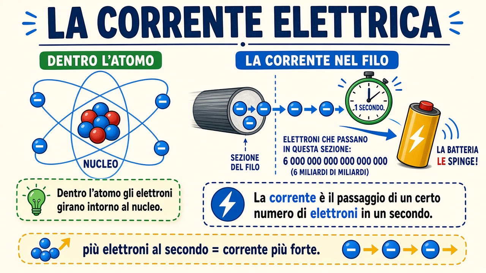

Come nasce la corrente elettrica
Un poster da tenere in classe: dall’atomo al filo, cosa significa «corrente» e perché conta quanti elettroni passano in un secondo.
«Più elettroni al secondo = corrente più forte.»

Vedi anche resistenza e circuito con lampadina: Circuito e lampadina · scheda.